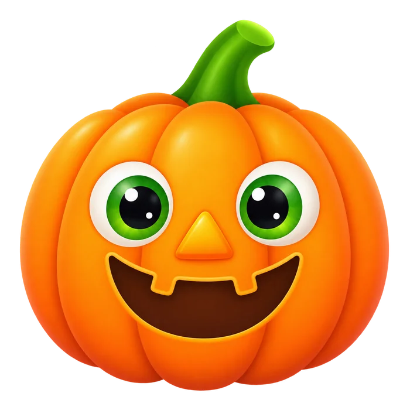
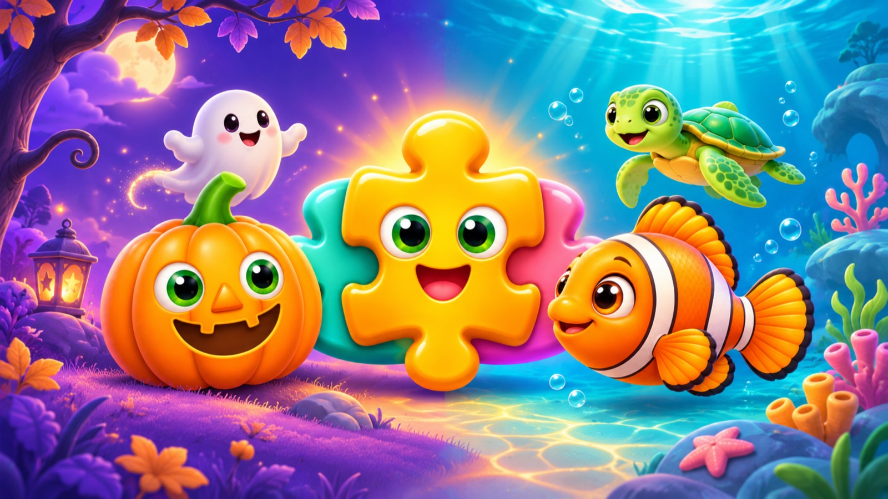

THE ORIGINAL WORLD
Halloween
Smiling pumpkins, gentle ghosts and a little everyday magic.
20 scenes · first 6 free✦ A LITTLE WORLD OF WONDER
A smiling pumpkin. A curious little fish. A whole world of “I did it!” for your little one.
View on the App StoreLittle Halloween is now Little Puzzle Worlds. Version 2.0 is available on the App Store, with Halloween and Underwater World. Your Halloween purchase and progress are preserved.

CHOOSE A LITTLE ADVENTURE
Drag a big piece to its silhouette, or tap the piece and then its place. Confetti celebrates every finished scene.

THE ORIGINAL WORLD
Smiling pumpkins, gentle ghosts and a little everyday magic.
20 scenes · first 6 free
NEW IN VERSION 2.0
Meet cheerful fish, turtles, crabs and more ocean friends.
20 scenes · first 6 free